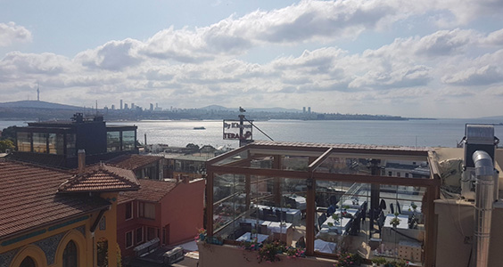

Los Angeles, USA
I got a chance to go to the "City of Angels" also known as Los Angeles or L.A last year after the fall semester had ended. I got to experience the sunny weather, walk through most of my favourite childhood film sets and enjoy quality time with my family. While a great city to explore, I underestimated the amount of walking you have to do. Public transportation is not an option due to how unsafe it is to use, even the locals don't recommend taking public transportation. So, with that in mind, I had two options, walking or Uber/Lyft. The latter is more expensive but, in some places, I didn't have a choice due to how far going north to south of the city is. Although, lots of places are within walkable distance such as the TCL Chinese Theater and the Hollywood Walk of Fame. However despite the means of transportation, I loved LA but I definitely should have worn better shoes.
Learn more about LA here!Istanbul, Turkey
I've only been to Istanbul once and it was all I could ever talk about for a while. Istanbul is a city I always recommend to people who haven't been to Turkey. I travelled to Istanbul around 2018-ish. I managed to stay in a hotel that was within walking range of its most iconic sights such as Hagia Sophia, the Blue Mosque and the Grand Bazaar. If you love learning about history or connecting to the culture, I cannot recommend Istanbul enough. Did I mention there are stray cats everywhere? Safe to pet and they love being around in the open plazas with food and groups of people. Overall, beautiful city and not as costly compared to L.A. Istanbul itself was amazing and it opened my eyes to how important preserving historical sites is.
Learn more about Istanbul here! Dubai, UAE
I've been to Dubai the most out of all the vacations I've spent. The last time I went to Dubai was in 2019 but it was my third or fourth time visiting. Dubai is a city I would describe as "The Future." Many tall buildings surround you as you drive along the never-ending roads. Nothing is lacking with no building left untouched and you rarely see construction or people walking along the sidewalks. Everything around you has a very future-esque vibe to it and you might feel out of touch just by how much more advanced the city is. However, don't let that stop you from touring. Dubai is home to one of the biggest malls in the world with one of the world's largest aquariums inside. The Burj Khalifa, the world's tallest building, is right outside with a large fountain to accompany it that does fountain shows at night. Overall, Dubai can be overwhelming to be around but it has its charm that you'll understand if you visit. Also, Emirates one of their airline companies offers the best services if you plan on flying to Dubai or anywhere in the Middle East, even in economy!
Learn more about Dubai here!